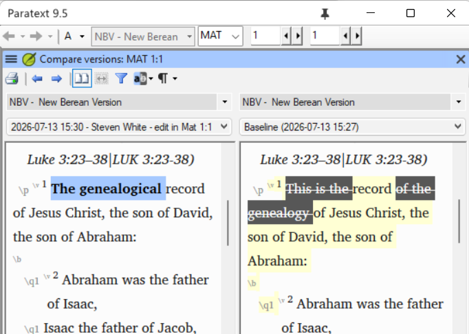
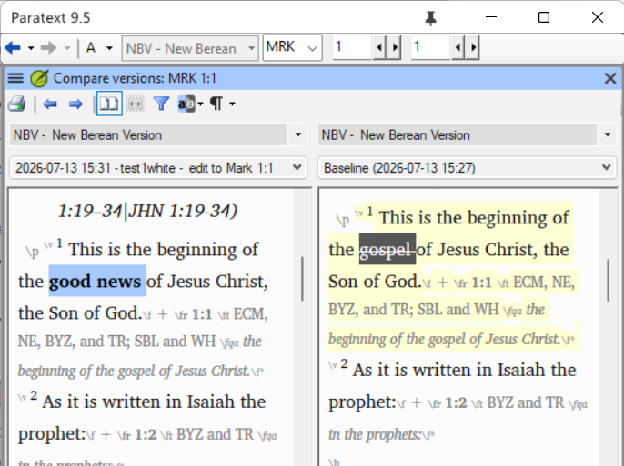
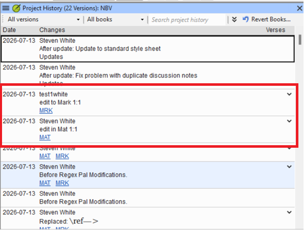
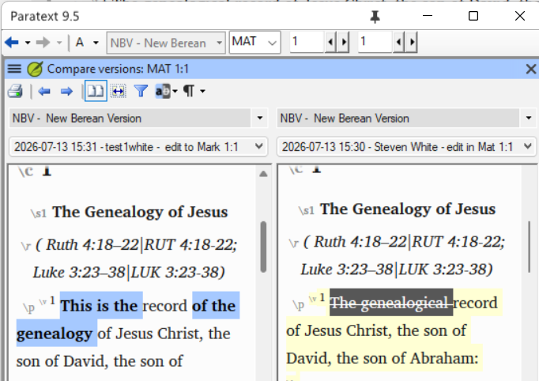

Why Project History Isn't Always Chronological¶
Estimated time: 40 minutes
Purpose: Prepares you to explain — to an alarmed translator or team leader — why Paratext's project history can appear to show an edit being "undone" when nothing was actually lost, and to determine the real sequence of changes using the tools available rather than the history view's apparent order.
Learning objectives¶
- You will be able to diagnose why Paratext's chronological project-history view does not always reflect the true order of edits, and determine the actual sequence of changes using the tools available.
Connect¶
✏️ Reflection: Think about a time you or a team you support used Paratext's Compare Versions or project history to look back at earlier edits — maybe after a Send/Receive brought in someone else's changes. Did the order shown ever look strange, or did you assume it was a plain, reliable timeline? Keep that assumption in mind — this lesson exists because that assumption isn't always safe.
Content¶
The underlying mechanism: version numbers, not timestamps
The Mercurial software that stores a Paratext project's repository — the same engine that manages Send/Receive, project history, and merging — tracks history by version number, not strictly by chronology. When a project is created, that's version #1. Each edit or change after that becomes the next version: #2, #3, and so on.
The trouble comes when multiple users are working at once. Suppose two users both start from version #18 on their own computers:
- The first user edits Matthew, creating what their computer thinks is version #19.
- The second user (working from the same #18 starting point, on their own computer) edits Mark, also creating what their computer thinks is version #19.
When they both Send/Receive, Mercurial can't have two different version #19s. It picks one to actually be #19, the other becomes #20, and once the two merge, that becomes #21. The numerical progression is consistent — but it does not necessarily match the chronological order in which the two edits actually happened.
Walking through the illustration
Here is exactly the scenario that causes confusion. One user makes this edit at the beginning of Matthew, then marks a point in project history:

A second user makes this edit at the beginning of Mark, then also marks a point in project history:

After both users Send/Receive, the project history looks like this:

If someone then runs Compare Versions on Matthew, comparing the history point from when Mark was edited against the history point from when Matthew was edited, the edit to Matthew appears to have been undone:

This is an illusion. Nothing was undone. History points in the repository are not always in strict chronological order, so comparing across them can make an earlier edit look like it was reversed by a later one, when really the two edits just landed in a different numeric sequence than you'd expect from their real-world timing.
A real case: on one project, a user's computer clock was set to the wrong date — several months in the future. Mercurial was not fooled by the bad date. It kept track of the fact that this user made an edit, sent it to the server, and that other users made edits afterward — even though the erroneous date made the timestamp look like the most recent thing to happen. It correctly determined this user's work was not the most "recent" version, because it tracks by version number, not by the (potentially wrong) clock on someone's machine.
INFO: This issue applies to Paratext 9, and to any previous version that used Mercurial repositories — going all the way back to Paratext 7.
Key Takeaways¶
- Paratext's project history is ordered by Mercurial version number, not strict chronology.
- When multiple users edit at the same time from the same starting version, Mercurial resolves the conflict by renumbering — the resulting order can look chronologically "wrong" even though no data was lost.
- Comparing versions across history points that were created out of true time-order can make an earlier edit look like it was undone by a later one. It wasn't — this is a display illusion, not a real reversal.
- A wrong system clock on one user's computer does not fool Mercurial's version tracking, even though it can make the history view look odd.
- This has applied since Paratext 7 and continues to apply in Paratext 9.
Challenge¶
✏️ Try this: A team member comes to you worried: "I compared my edit to Matthew against the point where my colleague edited Mark, and it looks like my Matthew edit got wiped out! Did we lose my work?"
Write out how you would respond, including:
- What you would check first to determine whether the edit was actually lost, versus just appearing that way in the history view.
- A plain-language explanation of why this can happen, that this team member — who is not technical — would actually understand and find reassuring.
- What you would tell them to look at (or ask you to check) the next time they see something like this, before assuming work has been lost.
Change¶
✏️ Self-check: Could you explain, to a non-technical translator, why Paratext's project history can look out of order without anything actually being wrong? Try saying it out loud in one or two sentences.
✏️ Reflection: Think of a real team you support who regularly has multiple people editing different books at once. How likely is this exact situation to come up for them, and would they know to ask you before panicking?
Next: Lesson 3 looks at a related but higher-stakes situation — when a project's edit-access restrictions get bypassed entirely, not through a display illusion, but through real file corruption.